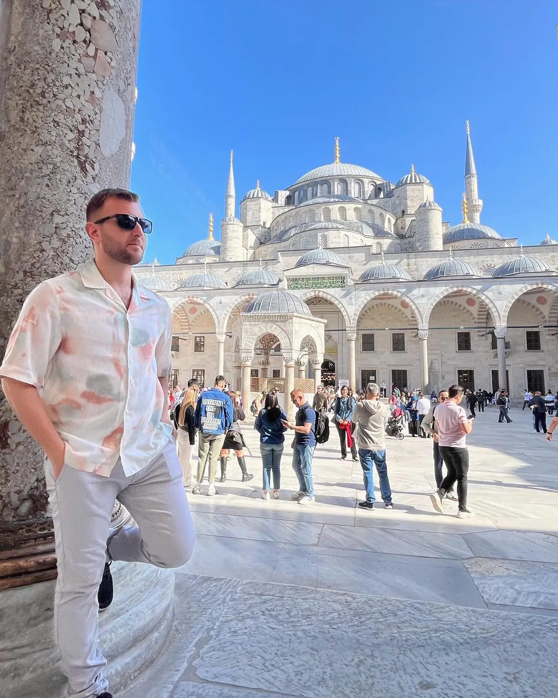
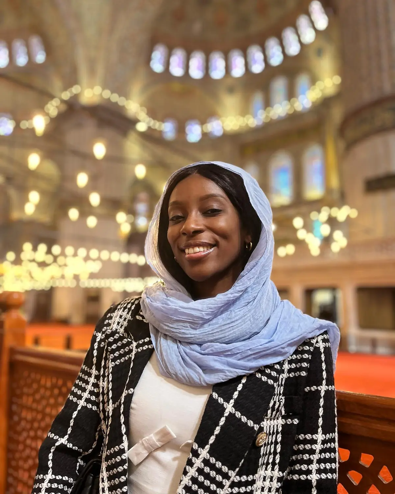

Most iconic01
The Blue Mosque
📍 Sultan Ahmed Mosque · Sultanahmet
The one that put Istanbul on our list, and it didn't disappoint — six minarets outside, and a hushed sea of hand-painted blue İznik tiles under the domes inside. It's a working mosque and free to enter, so go outside prayer times, dress modestly (women cover their hair — scarves are provided at the door), and expect to slip your shoes off. There's a photo of the ceiling further down that still doesn't do it justice.
Free entryDress modestly